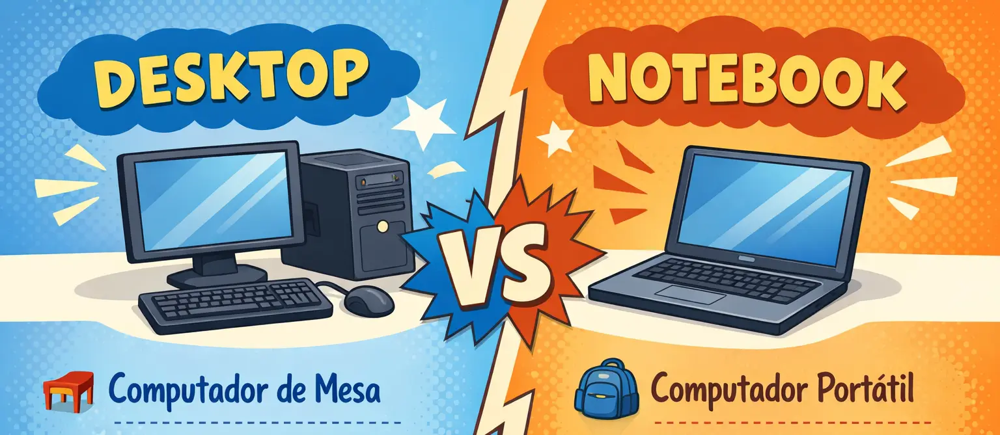
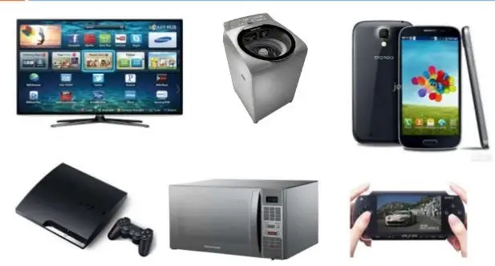

Desktop e notebook sao computadores capazes de realizar as mesmas tarefas basicas, como navegar na internet, editar documentos, assistir videos e executar programas. A principal diferenca esta no formato e no objetivo de uso de cada um.
O desktop e um computador de mesa, normalmente composto por gabinete, monitor, teclado e mouse separados. Ja o notebook reune todos esses componentes em um unico equipamento portatil, com tela, teclado e bateria integrados.
Comparacao pratica:
Em resumo, quem precisa de mobilidade tende a escolher notebook. Quem prioriza desempenho, ergonomia e facilidade de manutencao costuma preferir desktop.

Computadores embarcados sao sistemas computacionais integrados a outros equipamentos para executar funcoes especificas. Diferente de um desktop ou notebook, eles nao sao pensados para uso geral, mas para controlar uma tarefa definida.
Esses sistemas estao presentes em diversos dispositivos do dia a dia, como carros, televisores, roteadores, caixas eletronicos, maquinas industriais e eletrodomesticos inteligentes.
Mesmo sendo menores e discretos, os embarcados sao fundamentais para automatizar processos e tornar equipamentos mais eficientes e conectados.